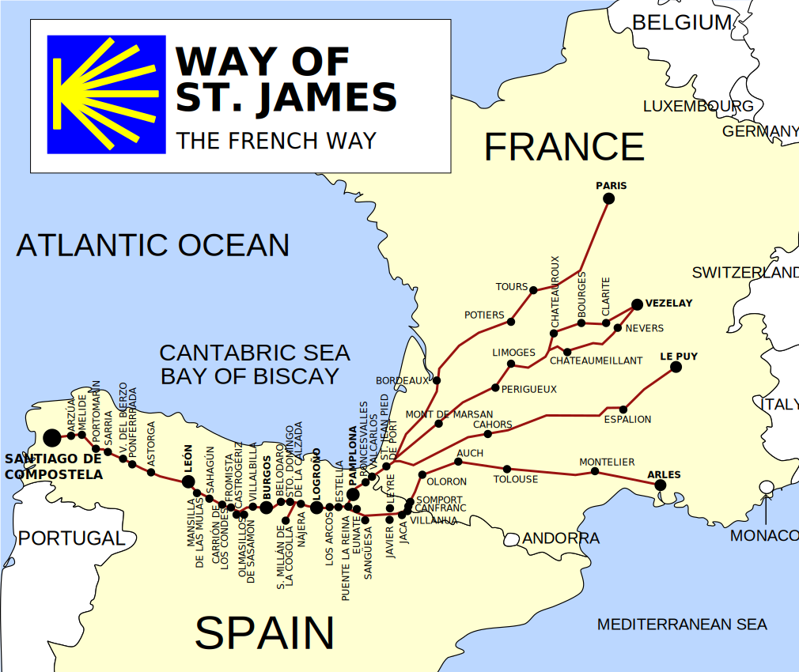
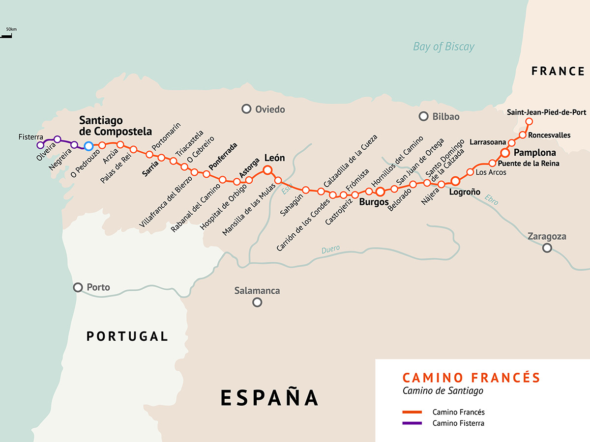
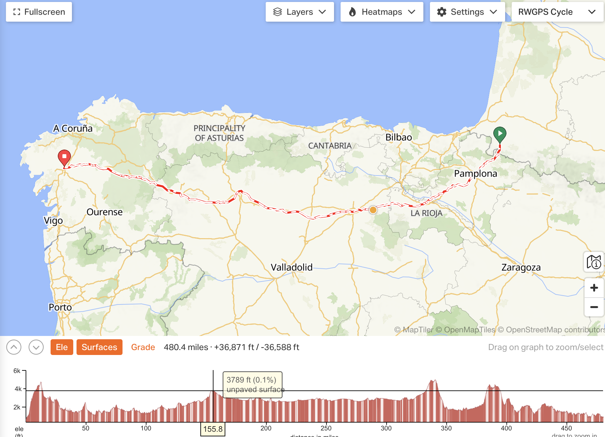

Overview
Where can I start walking the Camino?

Name of the place
Distance to Santiago
From SJPDP
Saint-Jean-Pied-de-Port
770
0
Roncesvalles
746
24
Pamplona
702
68
Logroño
606
164
Burgos
483
287
León
319
451
Astorga
267
503
O Cebreiro
162
608
Sarria
116
654
Santiago
0
770

Ride With GPS - interactive map for the French Way
